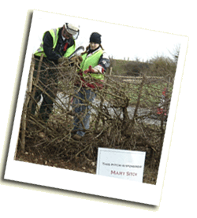
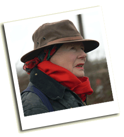

The Hedgelaying Competition is always free to enter and to observe. Most of the costs are paid by local businesses and organisations and without their generous support the competition could not continue. The main sponsors of the Isle of Wight Hedgelaying Competition have been:
Additional sponsorship has been provided by many other individuals and organisations including the following:
|

Mrs Mary Sitch, a sponsor There are many items that need to be sponsored
for the competition, from the trophies to the toilets! Additionally you may
like to sponsor a pitch for the competition from as little as £25.
Please contact the
Isle of Wight Hedgerow Group for further information on how to sponsor the
competition.